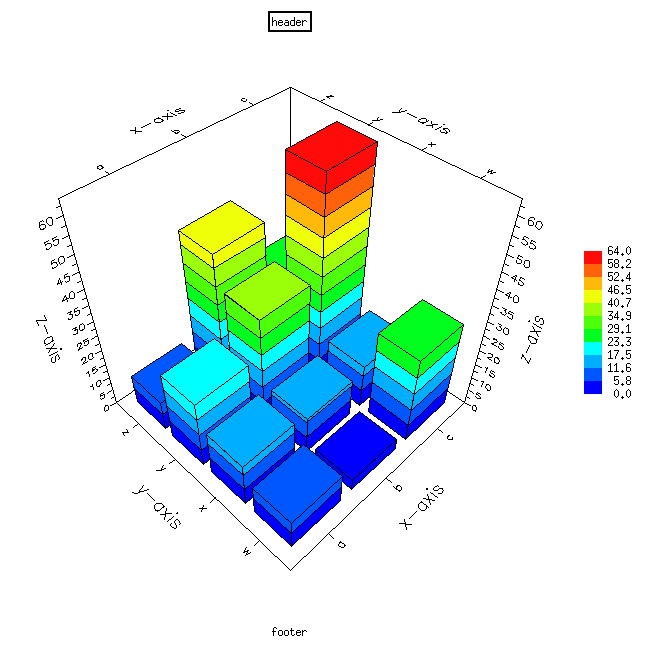

xrt3d() is a function in module Chart::Graph that lets you
generate graphs on the fly in perl. It was written as a front-end
application to gnuplot for hassle-free generation of graphs. You
would normally use xrt3d to generate 3D graphs.
#make sure to include Chart::Graph
use Chart::Graph;
xrt3d(\%options, \@data_set);
#say for example we have a 3 by 4 matrix -> dataxy
xrt3d(\%options,
[[data11, data12, data13, data14],
[data21, data22, data23, data24],
[data31, data32, data33, data34]])
%options
| Name | Options | Default |
| "output file" | (set your own) | "untitled-xrt3d.gif" |
| "x-axis title" | (set your own) | "x-axis" |
| "y-axis title" | (set your own) | "y-axis" |
| "z-axis title" | (set your own) | "z-axis" |
| "x-min" | "0" or "1"(normally 0) | "0" |
| "y-min" | "0" or "1"(normally 0) | "0" |
| "x-step" | "0" or "1"(normally 1) | "1" |
| "y-step" | "0" or "1"(normally 1) | "1" |
| "x-ticks" | (set your own) | none |
| "y-ticks" | (set your own) | none |
| "header" | (set your own) | "header" |
| "footer" | (set your own) | "footer" |
\@data_set: an x by y matrix of doubles-- see example for syntax
#make sure to include Chart::Graph
use Chart::Graph;
#using a 3 by 4 matrix for the data set
xrt3d({"x-ticks"=>["a", "b", "c"],
"y-ticks"=>["w", "x", "y", "z"],},
[["10", "15", "23", "10"],
["4", "13", "35", "45"],
["29", "15", "64", "24"]]);

|
for more information:
info @ caida.org
|
last update:
|
this page:

|